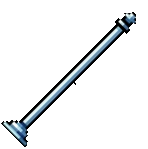
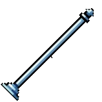
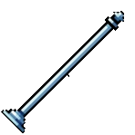

{% extends "landingbackground.html" %}
{% block title %}{{ country.name }} - Fruit Facts{% endblock %}
{% block body %}

Ahhh.. {{ country.name}}, home to the delicious
{% for f in facts %}
{{ f.fruit }}!
{{ f.fact }}
{{ country.summary }}
{% if f.fruit_image %}
{% set fimg = f.fruit_image|replace('\\','/') %}
{% if '://' in fimg %}
{% else %}
{% set ffile = fimg.startswith('static/') and fimg[7:] or fimg %}
{% endif %}
{% endif %}
{% endfor %}
{% if country.hero_image %}
{% set img = country.hero_image|replace('\\','/') %}
{% if '://' in img %}
{% else %}
{# If DB stored "static/images/...", drop the leading "static/" #}
{% set file = img.startswith('static/') and img[7:] or img %}
{% endif %}
{% endif %}


 
